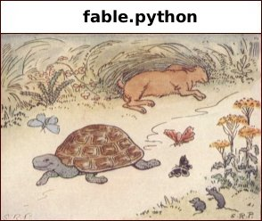

Table of Content

Fable Python is a workbench written in Java by Andy Gotz of ESRF. It is used to write python interactively, run scripts and plot NumPy arrays easily.
Fable Python is part of the Fable series of graphical applications based on Eclipse.
Fable Python requires Python 2.5. It is up to the user to download and install Python 2.5 should they not have it.
Help is available on the following topics :